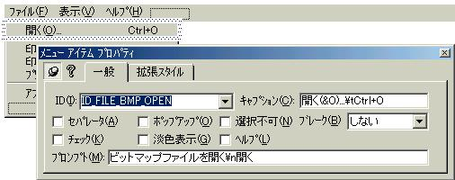

| 1.本ソフトウェア制作で学ぶことの出来る技術 |
本ソフトウェア制作を通して以下のことを学ぶことができるでしょう。皆さんのプログラミング経験のお手伝いになれば幸いです。
■ ビットマップファイルの読み込み方法
■ メモリデバイスコンテキストの作成と利用
■ 再描画処理(クリッピング)
■ DocとViewの明示的な使い分け
なんだか難しそうですが、少しづつ学習していくので心配ないですよ。
| 2.プロジェクトの作成 |
プロジェクトを作成します。作成内容については以下の通りです。
[初期画面]
プロジェクト名BmpLoader
プロジェクト種類 MFC AppWizard(exe)
"新規にワークスペースを作成"にチェック
[ステップ1]
作成するアプリケーションの種類においてSDIをチェック
[ステップ2〜]
特に変更なし
今回は、SDI(Single Document Interface)のソフトウェアとして作成していきます(その方が簡単なので)。
| 3.リソースの編集 |
BitmapLoaderですから、メニューの中で「編集」する項目や新規作成・保存といった項目は不必要です。そこで不要なものは全て削除してしまいます。
1. 「編集」の以下の全てのメニュー項目を削除する(「編集」ポップアップも削除)。
2. 「ファイル」内において、"印刷"、"印刷プレビュー"、"プリンタの設定"、"アプリケーションの終了"以外の項目を削除する。
"開く"を削除してしまうのか？と思う人がいるかもしれませんが、メニューにある"開く"が押されると、Appwizardが自動的にCWinAppクラスのOnFileOpenを実行するように、以下の通りに記述しているため(BmpLoader.cppにて)です。
ON_COMMAND(ID_FILE_OPEN, CWinApp::OnFileOpen)
今回はビットマップファイルを開きます。したがってディフォルトであるCWinApp::OnFileOpenでは対処できないので、こちらでファイルを開く機構を新たに作らなくてはならないので、"開く"(ID_FILE_OPEN)を削除してしまうのです。
3. "開く"メニューを追加する。
| Fig1_1.jpg "開く"メニューを追加 |
|  |
キャプションにて、"..."と書いていますが、これは「このメニューを開くと何かダイアログが開く」 という意味だそうです。しかしキャプションは表示文字列に過ぎないので
なくても構いません。またCtrl+Oとはアクセラレータキーです。アクセラレータキーは、後で設定しますのでとりあえず書いておきます。